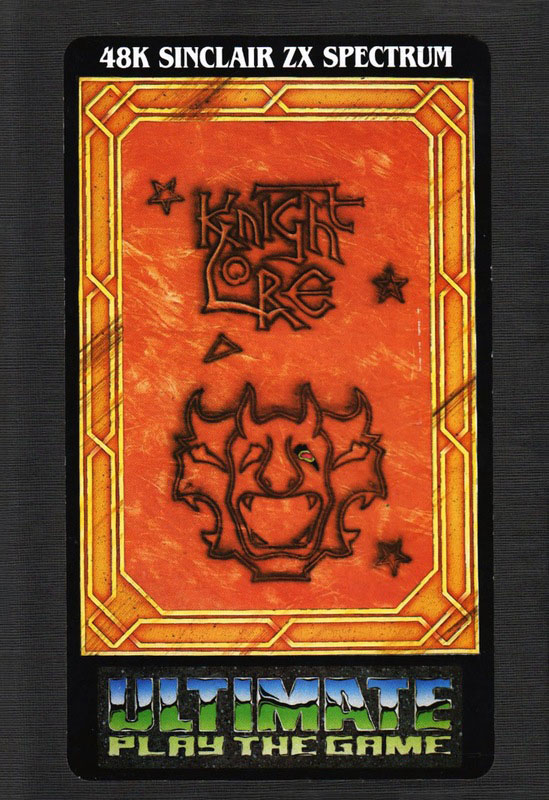
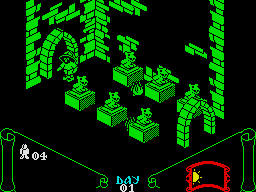
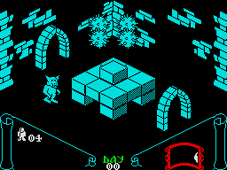

Knight Lore


{kind=link}

| Publisher: | Ultimate Play the Game |
| Price: | £9.95 |
| Year: | 1984 |
| Source: | CRASH, Issue 12 |

It must be Christmas! You can tell by the fact that Ultimate has released two games simultaneously. Underwurlde is the follow up to Sabre Wulf and Knight Lore is the follow up to Underwurlde. Ultimate have been clever enough to ensure that both new releases are very different from each other in playing style and game design. Whereas Atic Atac, Sabre Wulf and Underwurlde all played with 3D Knight Lore uses a very solid 3D perspective in which the 3D plays an important part spatially.

Our brave hero, Sabreman, is back again, pith helmet still firmly in place, but now roving the torturous rooms and passageways of Knight Lore castle to seek the old dying wizard, who is the only person who can free him from the deadly curse (appearing in a pith helmet all day perhaps)? The old wizard, whose name is Melkhior, is like many another game wizard — he sets traps and tests to ensure that all who reach him are worthy.
Knight Lore is played over forty days and forty nights. At the base of the screen a moon and sun symbol indicate the time. By day Sabreman is himself, but at night he changes into a werewulf. In either condition he is vulnerable to sudden death. The rooms are populated with all manner of spiky death and large stone blocks. In some respects Knight Lore resembles a 3D platform game, where the trick in each room is to discover the route and the methods by which you can reach the various charms which must be collected without being impaled on a spike, crushed by a failing ball chain or zapped by a poltergeist. Sometimes the ghosties are useful in helping you to move about, but panic sets in as the days run out, for after the fortieth day, Sabreman, if he fails in his quest, will forever become a werewulf.
Scoring is by time taken, percentage of quest completed and charms collected with an overall rating offered. As in Underwurlde there is no Hall of Fame, largely due to the size of the program.
CRITICISM

‘Sabreman is back, but this time he’s back in glorious 3D. Knight Lore is similar in appearance to Avalon, but the graphics are bolder. With that said Knight Lore resembles nothing I’ve played before. It is fun, addictive, but to sum up in one word it’s Brilliant! From what I can gather from the rhyming instructions you’ve got to put together a potion to stop yourself from turning into a werewulf — and one of the excellent touches in the game is the transformation from man to beast and back again. After a while I think I preferred the werewulf. The people at Ultimate obviously have devious minds because you only have to look at some of the rooms to see how wicked they are. On the whole I found Knight Lore slightly more pleasing than Underwurlde for two reasons; it’s slightly easier and it’s not as frustrating. Once again Ultimate have come up with the goods, Knight Lore is sheer perfection, get this for Christmas — you definitely won’t regret it.’
‘It’s nice to see Ultimate depart from the Sabreman theme in Knight Lore. This game is totally different and original from anything they’ve done before — in my opinion it’s the best game they have yet produced. Graphics are in 3D and use the new technique of masking, so that the moving characters do not flicker at all when they pass in front of other objects, and only one colour is used per screen which avoids any attribute problems. This does not mean that the game is lacking in colour however, since each screen has its own colour. Some of the graphics are distinctly original, quite different to anything produced on the Spectrum before. The graphics are so detailed, imaginative, large and well drawn, it is impossible to complain about them. There is just such a lot to see and to explore, it’s incredible and a joy to play. This game is full of mystery in the sense of why do you turn into a werewulf at night!? What do any of the objects do, is a question I keep asking myself — just fun collecting them. Good use of sound has been made with some nice tunes. To sum this game up I do think that this is probably the best game yet produced for the Spectrum and it seems to me to be perfect in every sense. I honestly can’t see how any real improvement can be made on this — well worth the £10.’
‘Any Ultimate game is a thrill to unpack and load, but with Knight Lore they have surpassed themselves. The 3D graphics are so exciting to see that the fingers are instantly itching to get at the keys. A novel innovation here is the option to select what is called directional control as well as the keys or joystick functions. This adds eight directional movement to Sabreman, which is very useful in the tight confines of the 3D screen. The 3D itself is excellent, with marvellous drawing of the walls and characters, and Ultimate have used the hidden view idea very cruelly, so that a hint may be given of something nasty crouching behind a stairway — but you’re never sure until it’s too late. The most has been wrung from the situation, for example, blocks may move on their own, sometimes they are carried by ghosts, sometimes they sink when you land on them, sometimes they vanish to reveal deadly spikes beneath. The animation is terrific from the smallest detail right through to Sabrewulfman himself. Knight Lore has that magical ingredient which makes it exciting to play and watch, and keeps you on the edge of your seat with anxiety. IT’S SIMPLY A GREAT GAME.’
COMMENTS
| Control keys: | Alternate keys on the bottom row for left/right, any keys on the second row for forward, any key on the third row for jump, any key on the top row for pick up/drop |
| Joystick: | Kempston, AGF, Protek, Sinclair 2 |
| Keyboard play: | Very responsive, plenty of options for simple control |
| Use of colour: | Excellent |
| Graphics: | Excellent 3D, marvellous design and imagination |
| Sound: | Terrific |
| Skill levels: | 1 |
| Lives: | 4 |
| Screens: | Not known, but loads |
| Special features: | Filmation, which allows you to do almost anything with the objects in the game |
| General rating: | An outstanding game at the price. |
| Use of computer: | 93% |
| Graphics: | 97% |
| Playability: | 97% |
| Getting started: | 90% |
| Addictive qualities: | 96% |
| Value for money: | 93% |
| Overall: | 94% |